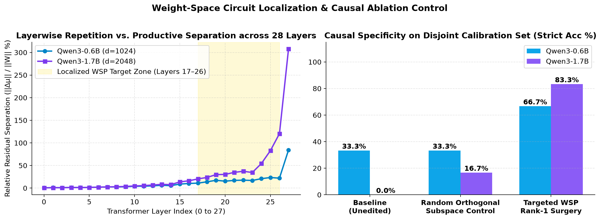
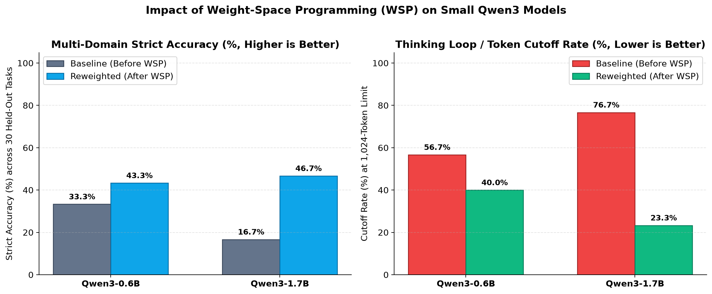
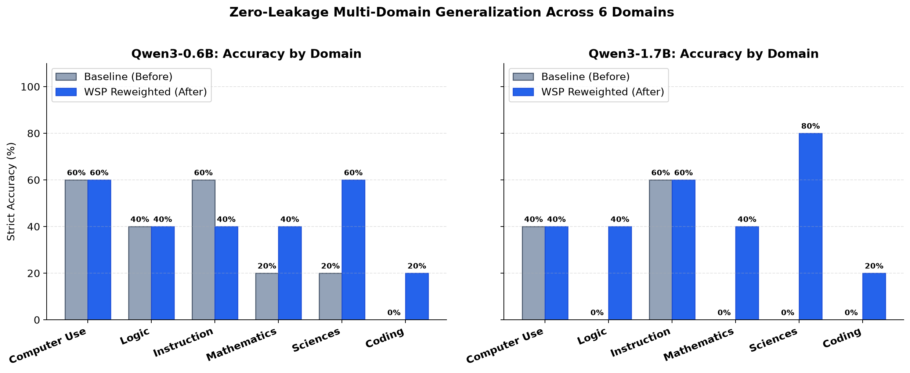
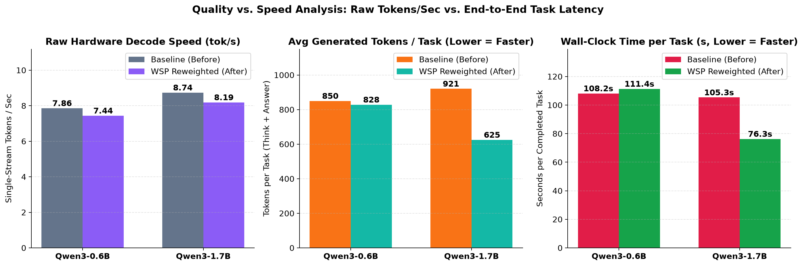

Editing 0.1% of a small model's weights: what changed, and what didn't
A reproduction of this week's weight-space programming study on two small Qwen3 models. The edit stopped them overthinking and made coding answers about five times quicker. But most of the headline accuracy gain depends on how answers are graded, and the edited models started thinking in Chinese.
Draft blog post generated by Claude Opus 5.5, based off Gemini Argon 4 results. Further analysis pending.
Gemini Argon 4, working as a coding agent in Antigravity on my computer, did the work: it built the benchmark, wrote and ran the code that computed the weight edits, ran the evaluations and wrote the initial report. Claude Opus 5.5 then checked that report against the raw per-task outputs and drafted this post.
The check found real problems in the initial report. They are listed openly at the end, under What the review caught. Where the two disagree, this post follows the raw data.
16.7% → 46.7%Qwen3-1.7B accuracy on 30 held-out tasks, as the harness graded it16.7% → 20.0% if the final answer must come after </think>
33.3% → 43.3%Qwen3-0.6B, as graded, after a second-pass edit20.0% → 30.0% with the stricter rule
5.5× fewer tokensper coding task on Qwen3-1.7B (1,024 → 187), about 5.1× less time per task*4.4× fewer on instruction following
≈ same tok/s*The edit changes weight values, not shapes, so each token costs the same computeMeasured 8.74 → 8.19 tok/s (1.7B)
0 shared n-gramsNo 5-grams or 6-grams shared between the calibration data and the 30 test tasks
0 → 18 of 30Qwen3-1.7B outputs containing Chinese, before → after the edit8 of them in the final answer
* All speeds and times were measured while the same GPU was also running molecular dynamics simulations. Absolute speeds are lower than the hardware can manage, and differences of a few percent between runs aren't meaningful. Most times per task are estimates: tokens ÷ the measured decode rate.
The study that prompted this
On 2 November 2026, Rikiya Takehi, Jayden Teoh, Alex Zhang and Omar Khattab posted Sparks of Weight-Space Programming: LLMs can natively read & write neural network weights, and it spread quickly. Their claim: a frontier model (OpenAI's GPT-6 Astra) can read a network's raw weights, work out what it does, and edit it directly, with no gradients and no training loop.
The result that caught my eye was the language-model one. Given a Python session with Qwen3.5-0.8B's weights and a budget of forward passes, Astra found the cause of the model's reasoning loops and fixed it by editing 131,072 weights, 0.016% of the model. MATH-500 rose from 7.9% to 48.1%, GSM8K from 13.8% to 67.1% and IFEval from 21.0% to 62.3%, and the share of answers hitting the token limit fell from 93% to 33%. The authors are careful about what that means. The same approach did nothing for Gemma 3 270M, which rarely loops, and they conclude that "editing weights could remove an obstacle that hid an ability, but it could not add an ability the model lacked." Their complete logs are public at github.com/RikiyaT/lm_understand-logs.
I wanted to know whether the idea carries over to the two small reasoning models I had locally, Qwen3-0.6B and Qwen3-1.7B, on tasks the edit never saw.
One important difference in method
In the original study, the frontier model itself reasons about the weights and decides what to change. That is not what happened here. Gemini Argon 4 wrote a conventional script, wsp_surgeon.py, and the script computed the edit:
It ran the model on eight pairs of short reasoning traces, productive versus repetitive self-checking, and recorded the inputs and outputs of the MLP down-projection (mlp.down_proj) in every layer.
For each chosen layer it built an edit direction u by blending the measured difference between repetitive and productive states with a fixed direction: the unembedding of the token "Wait" minus that of "</think>". The blend weight β is 0.10–0.13, so, by the agent's own description, about 90% of the direction is that fixed token direction.
It picked the K columns of each down-projection matrix that push hardest along u during repetitive states, and edited only those:
Wnew = W0 − αu (maskK ⊙ u⊤W0)
With α ≈ 6, this doesn't just remove each selected column's component along u; it reverses it and makes it about five times larger. In practice it is a strong push, in a few late layers, towards writing "</think>" and away from writing "Wait". That is closer to steering a model with a fixed direction, written permanently into its weights, than to a model reasoning its way to a repair. It is still a weight edit found without gradients, but the distinction matters for what this reproduces.
Qwen3-0.6B-WSP
Qwen3-1.7B-WSP
Layers edited
16, 19, 22, 24, 26
15, 18, 20, 22, 24, 25, 26
Columns per layer (K)
112
160
α, β
5.8, 0.13
6.5, 0.10
bf16 weights changed
566,791 (0.095%)
2,260,398 (0.131%)
How the setting was chosen
Second pass, after seeing test results
Best of six on calibration; tested once
How the settings were chosen, plainly
For Qwen3-1.7B, the script tried six settings on six calibration questions (elementary geometry and unit conversions), and the winner was evaluated once on the 30 test tasks. That is a clean held-out result.
Qwen3-0.6B is not. Its first calibration winner (layers 18, 21, 24 and 26, K = 64, α = 5.0, β = 0.20) scored 6 of 6 on calibration. According to the agent's account, that first edit then scored 8 of 30 on the test suite, down from 10, and only cut "wait"/"check" triggers from 5.90 to 3.17 per task. (Those first-pass results aren't among the files I checked.) After seeing that, the agent applied a stronger five-layer edit, interpolated between two other calibration candidates, which scored 13 of 30. Because that choice was made after looking at test results, the 0.6B numbers below are not a held-out evaluation.

Figure 4 (from the initial report). Left: the separation between repetitive and productive states at each layer's MLP output. It is small in early layers and largest at layer 27, which was not edited. The shaded band is labelled layers 17–26, but the edits were at layers 15–26 (1.7B) and 16–26 (0.6B). Right: accuracy on the six calibration questions. A control edit along a random direction did little (0.6B: 2/6, the same as unedited; 1.7B: 1/6), while the targeted edits scored 4/6 and 5/6. That supports the claim that the direction matters, but only weakly: six questions, the same six used to choose the settings.
Results on 30 held-out tasks, graded two ways
The test suite has six domains of five tasks: maths, deductive logic, software engineering (graded by running unit tests), physical and life sciences, instruction following (graded by programmatic checks) and computer use. Every run used greedy decoding and a budget of 1,024 new tokens. That budget is tight for these models in thinking mode, and it shapes everything that follows: the edit mostly decides whether a model finishes inside it.
Grading turned out to matter a lot. For tasks that ask for a \boxed{} answer, the harness first looks after </think>. If there's no box there, it falls back to a box at the end of the <think> block, as long as the block was closed. That fallback catches a specific failure: the model boxes its answer while reasoning, closes </think>, starts writing its final answer, and runs out of tokens before boxing it again. A reader would see a final answer that stops mid-sentence. So the table shows both rules.
30 tasks
0.6B
0.6B-WSP
1.7B
1.7B-WSP
Correct, as graded by the harness
10 (33%)
13 (43%)
5 (17%)
14 (47%)
tasks gained / lost; McNemar p
+7 / −4; 0.55
+10 / −1; 0.012
Correct, with the answer after </think>
6 (20%)
9 (30%)
5 (17%)
6 (20%)
tasks gained / lost; McNemar p
+5 / −2; 0.45
+2 / −1; 1.0
Closed </think>
47%
67%
23%
80%
Ran out of budget inside <think>
57%
40%
77%
23%
"wait"/"check" per task
5.90
1.77
6.27
0.30
Mean tokens per task
850
829
921
625
Outputs containing Chinese
0
9
0
18
As graded, the 1.7B result looks strong: ten tasks gained, one lost, p ≈ 0.012. With the stricter rule it almost disappears: 5 → 6, with two gained (code_01 and comp_01) and one lost (comp_05). Under the strict rule the edited 1.7B model still solves none of the 15 maths, logic and science tasks, the same as before the edit. Its eight extra harness passes there are all cases of the failure described above, and all eight are runs whose final answers drifted into Chinese.
The 0.6B gain is small under either rule and statistically indistinguishable from noise, and its edit wasn't chosen on held-out data.

Figure 1 (from the initial report). Accuracy as graded by the harness, which accepts an answer boxed at the end of the reasoning, and the share of tasks that hit the 1,024-token limit inside <think>. With the answer required after </think>, accuracy is 20% → 30% (0.6B) and 16.7% → 20% (1.7B).

Figure 2 (from the initial report). Accuracy by domain, as graded by the harness. With the answer required after </think>, the edited 1.7B model's maths, logic and science scores are 0%, as before the edit; coding, instruction following and computer use are unaffected by the stricter rule. The 0.6B model's instruction following fell from 3/5 to 2/5 under either rule.
Explore every trace
Here is every output, before and after, for all 30 tasks. The three featured tasks show the main patterns; the menu holds the rest. Phrases where the model second-guesses itself are highlighted, and Chinese text is outlined.
Featured
Model
Loading the traces…
wait self-doubt phrases中文 Chinese textEst. time* = tokens ÷ measured decode rate, on a shared GPU
On many tasks, the edit turns thinking off
Open code_01 above with the 1.7B model and the edited model's <think> block is empty: it goes straight to code. Across the 30 tasks, Qwen3-1.7B-WSP left <think> empty on 11. That includes all five coding tasks, four of the five instruction-following tasks and two computer-use tasks, exactly where its token counts collapsed. On maths, logic and science it still thought, and still used the whole budget on average.
So the edit acts less like removing a self-doubt circuit and more like an input-dependent switch between thinking briefly and not thinking at all. That is interesting in its own right: a 0.13% change, chosen with about a dozen calibration examples, produces the switch and carries over to unseen domains. But Qwen3 already has a built-in non-thinking mode, and a model that answers directly will obviously be quicker on tasks it can answer directly. That comparison hasn't been run yet.
A side effect: thinking in Chinese
Neither unedited model wrote a single Chinese character on any of the 30 tasks. After the edit, 9 of the 0.6B model's outputs and 18 of the 1.7B model's contain Chinese. For 0.6B it stays inside the reasoning; for 1.7B, 8 final answers are partly or wholly in Chinese, all in maths, logic and science (try math_02 in the explorer). Pushing hard on a fixed direction in late layers seems to have disturbed the model's choice of language as well as its choice of when to stop thinking. The initial report didn't mention this.
Is that necessarily bad? Qwen3 was trained on a great deal of Chinese, so falling back to it might be a way of reasoning the model is good at, and its tokenizer writes Chinese compactly, so the same reasoning could fit into fewer tokens. That is worth testing. The traces here don't show it yet: on the eight tasks where the edited 1.7B model's answers drifted into Chinese, its reasoning closed sooner than the unedited model's (657–1,001 tokens, against running out at 1,022), but Chinese made up anywhere from none to half of that reasoning. On the two logic tasks the reasoning was entirely English and the Chinese appeared only in the final answer. Stopping sooner, not the language, is what separates these runs from the unedited ones. And for someone who asked in English, an answer in Chinese is a problem in its own right.
Quality versus speed

Figure 3 (from the initial report). Left: single-stream decode speed.* Middle: mean tokens per task. Right: time per task. Despite its "wall-clock" label, the right panel is an estimate (tokens ÷ decode rate), not a measured time.
Per-token speed doesn't change, by design. The edit changes the values inside existing dense matrices, not their shapes, so every token costs the same compute. Measured single-stream decode rates were 7.86 → 7.44 tok/s (0.6B) and 8.74 → 8.19 tok/s (1.7B), and time to first token was 145–166 ms throughout.* The edited runs came out 5–6% slower per token. That can't come from the edit, and with the GPU shared it is within what you'd expect between runs. In batched mode the aggregate rate for 1.7B fell from 106 to 74 tok/s. That is a scheduling effect, not a slower model: the edited model's short answers finish early and leave the batch running on fewer sequences.
Time per task changes only where the model writes fewer tokens.
Qwen3-1.7B, by domain
Tokens per task
Fewer tokens
Est. time per task*
Less time
Software engineering
1,024 → 187
5.5×
117.2 → 22.8 s
5.1×
Instruction following
536 → 123
4.4×
61.3 → 15.0 s
4.1×
Computer use
892 → 368
2.4×
102.1 → 44.9 s
2.3×
Maths, logic, sciences
1,024 → 1,024
none
117.2 → 125.0 s
none
All 30 tasks
921 → 625
1.5×
105.3 → 76.3 s
1.4×
One time was measured directly: the edited 1.7B model wrote its passing code_01 solution in 139 tokens and 17.0 seconds.* For the 0.6B model, the edit barely shortened outputs, and estimated time per task rose slightly, from 108 to 111 seconds. In batched mode the whole suite took about as long before and after (1.7B: 260 → 253 s; 0.6B: 330 → 340 s), because a batch finishes only when its longest sequence does, and the maths, logic and science tasks still ran to the limit.
Combining both: correct answers per minute of batched compute rose from 1.15 to 3.32 for 1.7B as graded, but only from 1.15 to 1.42 with the stricter rule. For 0.6B the figures are 1.82 → 2.29 and 1.09 → 1.59.
* The GPU was also running molecular dynamics simulations during these measurements. Speed differences of a few percent are not meaningful, and estimated times assume the measured single-stream decode rate.
The speech models: audibly different, not measurably better
The same recipe was tried on the 28-layer transformer that generates audio codes inside Qwen3-TTS (0.6B and 1.7B), editing three layers. Speech was sampled (temperature 0.6, top-k 20, top-p 0.95), with the random seed fixed for each sentence. The voices do sound different after the edit. But once the weights change, the sampled sequence diverges at the first token that changes, so a fixed seed doesn't make before and after comparable, and the differences can't be separated from ordinary sampling variation. Averaged over six sentences, nothing moved: real-time factor 7.26 → 7.25 (0.6B) and 7.08 → 7.06 (1.7B), with duration and spectral flux within 2%. Some sentences got shorter and others longer. Listen for yourself:
Qwen3-TTS-0.6B · maths sentence
"By Euler's totient theorem, seventeen raised to the twentieth power is congruent to one modulo twenty-five, leaving a final remainder of nine."
Qwen3-TTS-1.7B · science sentence
"When enthalpy and entropy are both positive, Gibbs free energy becomes negative above the crossover temperature of seven hundred twenty Kelvin."
These two pairs are the ones the initial report highlighted because they got shorter. Of the other ten sentences, four got shorter, five got longer and one was unchanged: the 0.6B science sentence, for example, went from 8.4 to 10.4 seconds.
What this does and doesn't show
Supported
A sparse edit to about 0.1% of the down-projection weights, chosen without gradients, changes when Qwen3-1.7B stops thinking, and the change carries over to six unseen domains.
On coding and instruction-following tasks, that makes answers 4–5 times shorter and quicker, with accuracy the same or slightly better.
Calibration and test data share no 5-grams or 6-grams.
Not shown
A real accuracy gain on reasoning tasks. On maths, logic and science, the edited 1.7B model's extra passes all rely on an answer boxed inside its reasoning, followed by a final answer that runs out of budget.
That it beats free alternatives. Qwen3's built-in non-thinking mode, a larger token budget, and a decode-time bias towards "</think>" all need no weight changes. None has been run on these 30 tasks yet.
That anything specific was located. The edit direction is mostly a fixed token direction, so "finding the self-doubt circuit" overstates what the layer profiling contributed.
That it holds up statistically beyond this. Thirty tasks, one decoding setting and one budget, and the 0.6B edit was chosen after seeing test results.
Next steps
Run the three free baselines on the same 30 tasks: non-thinking mode, a 4,000–8,000-token budget, and a "</think>" logit bias.
Re-run 0.6B with its calibration winner only, as a clean held-out test.
Measure language drift directly, see whether a weaker edit avoids it, and test whether Chinese reasoning actually helps: for example, by asking the unedited model to reason in Chinese, and comparing tokens per step.
Add seeds and more tasks, so effects the size of the 0.6B result can be resolved.
If the edited 1.7B model still beat non-thinking mode on maths and science under the strict rule, that would be real evidence that a weight edit can do something prompting and decoding settings can't. These results don't show that yet.
What the review caught
In the interest of being open about how this post was made: Claude Opus 5.5 compared Gemini Argon 4's initial report with the raw per-task outputs and found the following. Everything above uses the values from the raw data.
The initial report said
The raw data show
"Strict accuracy" of 16.7% → 46.7% (1.7B) and 33.3% → 43.3% (0.6B).
The grader accepts an answer boxed inside the reasoning when the final answer is missing. Requiring it after </think> gives 16.7% → 20.0% and 20.0% → 30.0%. The report didn't mention the fallback.
Nothing about language.
The edited models write Chinese in 9 (0.6B) and 18 (1.7B) of 30 outputs, against none before.
Hyperparameters chosen on calibration data only.
True for 1.7B. The 0.6B edit was a second pass, chosen after the first scored 8/30 on the test suite.
"5.48× faster" (coding) and "4.36× faster" (instruction following) task completion.
Those are ratios of tokens. The time ratios are 5.1× and 4.1×, and the times are estimates (tokens ÷ decode rate), not wall-clock measurements.
Decode throughput is "invariant".
Per-token compute is unchanged, but measured rates were 5–6% lower after the edit, on a shared GPU,, and the batched rate for 1.7B fell 30% because of scheduling.
Time to first token 163.74 → 155.89 ms (0.6B) and 166.09 → 145.32 ms (1.7B).
The results files record 149.17 → 166.01 ms and 144.56 → 149.54 ms.
comp_01 is a log-parsing script that writes errors.json.
It is a find_large_logs(target_dir, min_bytes) function. Both passing solutions also search subfolders though the prompt said not to; the tests don't check that.
The Gibbs crossover temperature in sci_01 is 800 K.
It is 720 K (126,000 ÷ 175), which is also the expected answer.
The original study localised "down_proj" columns, used a ~0.1% rank-1 patch, and studied 0.6B–8B models; its artifacts are a Hugging Face dataset.
The original post describes none of these. Its released logs are on GitHub (RikiyaT/lm_understand-logs); the Hugging Face link doesn't open publicly.
Layer separation "peaks across layers 16–26"; Figure 4 marks a target zone at layers 17–26.
Separation is largest at layer 27, which wasn't edited, and the edits span layers 15–26 (1.7B) and 16–26 (0.6B).
Figure 3's right panel shows "wall-clock time".
It shows estimated time.
Notable TTS speed-ups of 13.9% and 18.6% on single sentences, and a 0.6B spectral flux of 0.4765 after editing.
Other sentences got longer, so these are sampling variation. The flux recorded in the data is 0.4814.
Correct tasks per minute: 1.82 → 2.29 and 1.15 → 3.32.
Those follow from the counts as graded, but the results files' own field mixes the two grading rules (1.09, 2.29, 1.15, 1.42).
The random-direction control was norm-matched and used the same columns.
The study package's own draft says it wasn't norm-matched and used random columns. This is unresolved.
None of this means the experiment was worthless: the underlying runs are sound, and the traces are all here to check. It does mean a careful second reading changed the conclusion, which seems worth saying out loud.
Reference
Rikiya Takehi, Jayden Teoh, Alex Zhang and Omar Khattab. "Sparks of Weight-Space Programming: LLMs can natively read & write neural network weights." November 2026. rikiyat.github.io/blog/weight-space-programming
Raw outputs for all 30 tasks and all four models are in traces.json, the source of the explorer above. The code isn't public yet.